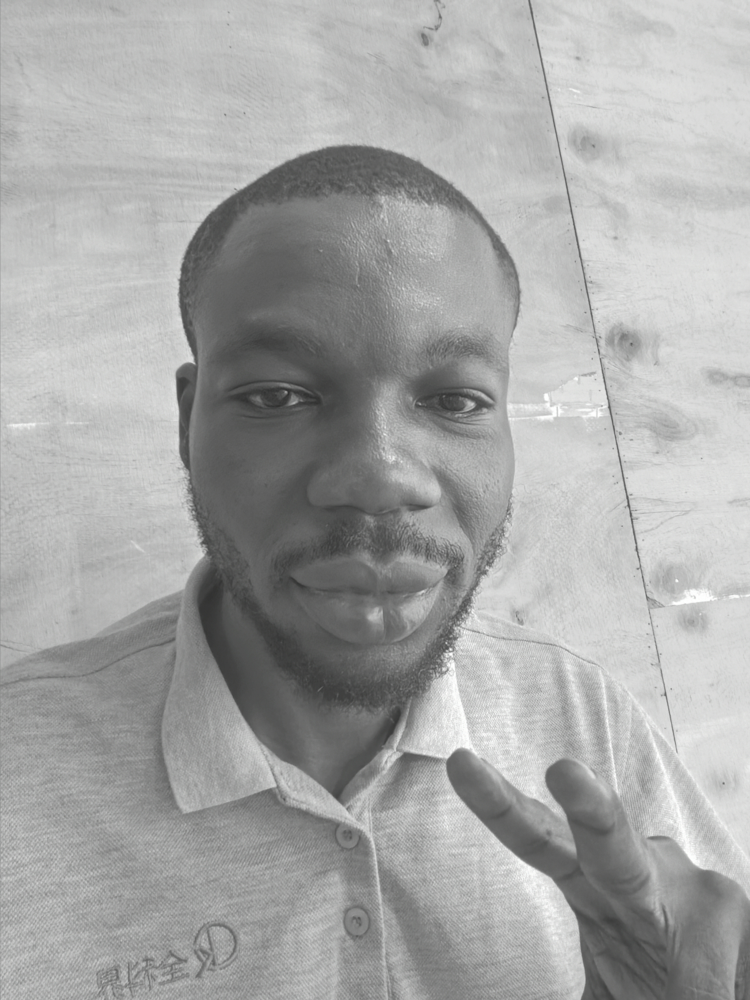

Team leadership
Coordinating sales teams, coaching colleagues and monitoring performance.
CYBERSECURITY · OPERATIONS · RESEARCH
A cybersecurity undergraduate at Miva Open University, bringing hands-on experience in team leadership, branch operations, customer relationships and research.
Based in Lagos, Nigeria · B.Sc. Cybersecurity, in view

Curiosity, careLearning security fundamentals · Building practical web projects · Protecting data integrity
A PRACTICAL PERSPECTIVE; People, processes & information
My experience across sales, operations and research has taught me to pay attention to how teams work, how information is handled and where clear processes make a difference. I am now building on that background through cybersecurity study. I’m interested in information security, responsible data handling and web design. This portfolio brings together my education, verified experience and selected practical work.
LIVE PROJECT
A playable project available on the web. Open the live experience and explore it directly.
Play the gameWHAT I BRING
Coordinating sales teams, coaching colleagues and monitoring performance.
Research, validation, cleaning and documentation to support reliable decisions.
Developing cybersecurity knowledge through university study and professional courses.